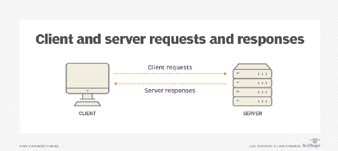
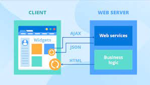

SYLLABUS OF MCA
1.What is client-server?

Client-server is a relationship in which one program, the
client, requests a service or resource from another program, the server. The label client-server was previously used t
o distinguish distrib
uted computing by PCs fr
om the monolithic, centralized computing model used by mainframes.
Today, computer transactions in
which the server fulfills a request made by a client are very common. The client-server model has become one of the central ideas of network computing
. In this context, the client est
ablishes a connection to the server over a LAN or WAN, such as the internet.
Once the server fulfils t
he client's requ
est, the connection terminate
s. Because multiple client programs
share the se
rvices of the same server program, a special server called a daemon might activate to await client requests.
In the early days of the
internet, most network traffic traveled through what is
known as north-south traffic. This is when data moves between remote clients that request web content and data center servers
that provide
the content.
Today, with the maturity of virtu
alization and cloud co
mputing, network traffic is more likely to flow server-to-server -- a pattern known as east-west traffic.
2.Components of web application

Components of web-based applications
Lần cập nhật gần nhất: 2022-01-26
All web-based database applications hav
e three primary components: A web browser (or client), a web app
lication server, and a database server.
Web-based database applications rely on a database server, which provides the data for the application. The database server sometimes also provides business logic in the form of stored procedures. Stored procedures can offer si
gnificant performance advantages, especially in a multi-tiered architecture. In addition to database servers, other enterprise information syst
em components include IMS databases, IBM® MQ messages, and CICS® records.
The clients handle the presentation logic, which controls the way
in which users interact with the application. In some cases, the client validates user-provided input. Web applications sometimes integrate
Java™ applets into the client-side logic to improve the presentat
ion layer.
Applet
A Java program that is part of a Hypertext Markup Language (HTML) page. (HTML is the standard method for presenting web data to users.) Applets work with Java-enabled browsers, such as Microsoft Internet Explorer; they are lo
aded when the HTML page is processed.
Web application servers manage the business
logic. The business logic, typically written in Java, supports multitiered applications. The web application server can manage requests from a variety of remote clients. The web application layer might include JavaServer Pages (J
SP) files, Java servlets, Enterprise JavaBeans (EJB) components, or web services.
JSP
A technology that provides a consistent way to extend web server func
tionality and create dynamic web content. The web applications that you develop with JSP technology are server and platform independe
nt.
Servlet
A Java program that responds to client requests and generates respons
es dynamically.
EJB
A component architecture for building distributed applications with th
e Java programming model. Server transactional components are reusable and provide portability across application servers.
Web services
Self-contained, modular applications that pr
ovide an interface between the provider and the consumer of application
resources. You can read more about web services later in this information.
3.Types of web contents
Anything can be content so long as it exists on your website, and the li
nes between different types of content are thin. The closer you look, the more divisions you can specify and the more types of content you can list.
Website Setup there, for example, lists large numbers of different kinds of content under different overarching categories. "Visual Content," for example, includes images. Still, they list various graphics, such as diagrams, screenshot
s, gifs, infographics, photos, photo galleries, presentations, and charts, all as several types of content.
4.Overview of HTTP_HTTP request
HTTP headers are written on a message to provide the recipient with in
formation about the message, the sender, and the way in which the sender wants to communicate with the recipient. Each HTTP header is made up of a name and a value. The HTTP protocol specifications define the standard set of HTTP headers, and describe how to use them correctly. HTTP messages can also inc
lude extension headers, which are not part of the HTTP/1.1 or HTTP/1.0 specifications.
The HTTP headers for a client's request contain information that a server can use to decide how to respond to the request. For example, the following series of headers can be used to specify that the user onl
wants to read the requested document in French or German, and that th
e document should only be sent if it has changed since the date and time when the client last obtained it:
5.Generation of dynamic web pages
A dynamic website is a site that generates pages in rea
l time, responding to dynamic characteristics such as screen size and device type. The structure and content of a dynamic web page are flexible, allowing you to customize the end-user’s experience based on the browser or requests.
Dynamic websites respond to user actions to display the relevant
content in an appropriate format. The extent of the change the website can handle differs according to the intricacy of the website’s interactive components and the developer’s skill level.
Dynamic websites are used for a variety of purposes, including social media, photo and video sharing, web applications, and digital commerce websites.
6.Application servers
Application Server is a type of server designed to install, operate, and host applications. In the early days of application servers, there was a huge growth in the number of applications brought to the Internet. Thos
e applications became bigger and bigger with the demand for adding
more and more functionalities to the application and become more complex to run and maintain. There was a need for some kind of program on the network while it will share application capabilities in an efficient and organized manner.
7.Web security
A web application firewall (WAF) protects web applications by mon
itoring and filtering internet traffic that flows between an application and the internet. In this way, a WAF works as a secure web gateway (SWG). It
provides protection for web applications against attacks, including cross-site scripting, file inclusion, cross-site forgery, Structured Query Language (SQL) injection, and other threats.
In the Open Systems Interconnection (OSI) model, a W
AF works within Layer 7. Even though it works against many interne
t threats, it is not intended to defend against all kinds of threats. A WAF often works within a suite of protective tools meant to defend a network, computer, or application. Learn more about what is WAF.